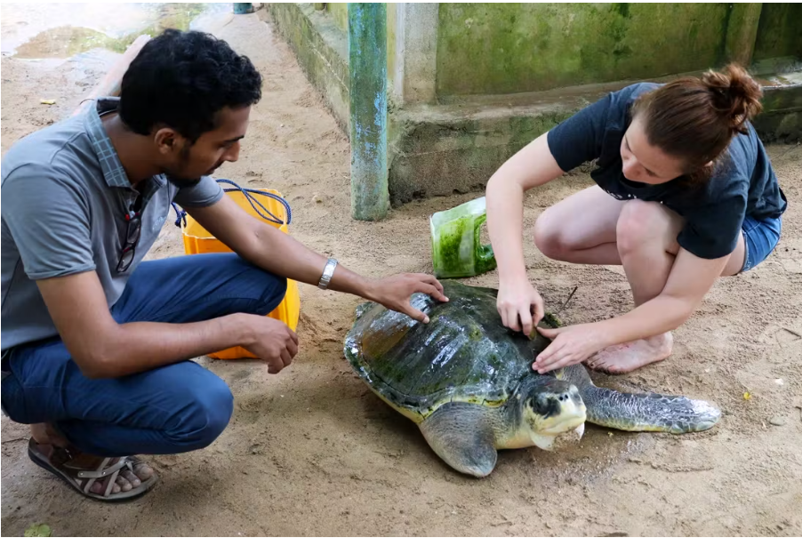

Sea turtles that frequent the cost are protected by the recover the turtle conservation initiative, a marine turtle conservation organization. It became crucial to protect the nesting places and contribute to the conservation of the species because Sri-Lankas’s species are home to five of the seven endangered turtle species. The Loggerhead , Green, Hawksbill, Olive Ridley, and leatherback turtles are the principal kinds that nest and lay their eggs on the island's golden coast and are protected.
The greatest time to visit the conservation center is any time of the year, but if you are interested in seeing a turtle lay her eggs, the best time to do so is from April to July, when 5 to 15 turtles make nightly trips to the shore. Nevertheless, sightings are uncommon from October to January, when only one or two turtles are seen at night. Volunteers collect the hatching eggs and keep them in the protected surroundings of the conservation site until they are ready to hatch. You could possibly be capable of ringing back a few hatchlings to the Big Blue if you are fortunate! This site is in galle and is a wonderful day trip while you tour Mirissa and Matara's other tourist destinations.
The volunteer work you do in Sri Lanka will most likely evolve spending time on the beach with sea turtles and their eggs, however specific responsibilities may vary significantly from project to project. These are few examples of tasks that may be assigned to you during your volunteer endeavor.
We, Nimo Turtle Care are dedicated to providing a seamless and inclusive experience for tourists visiting Sri Lanka , ensuring easy and convenient access to the enchanting world of the turtle hatcheries .
Make sure to always follow us back on our Social Media